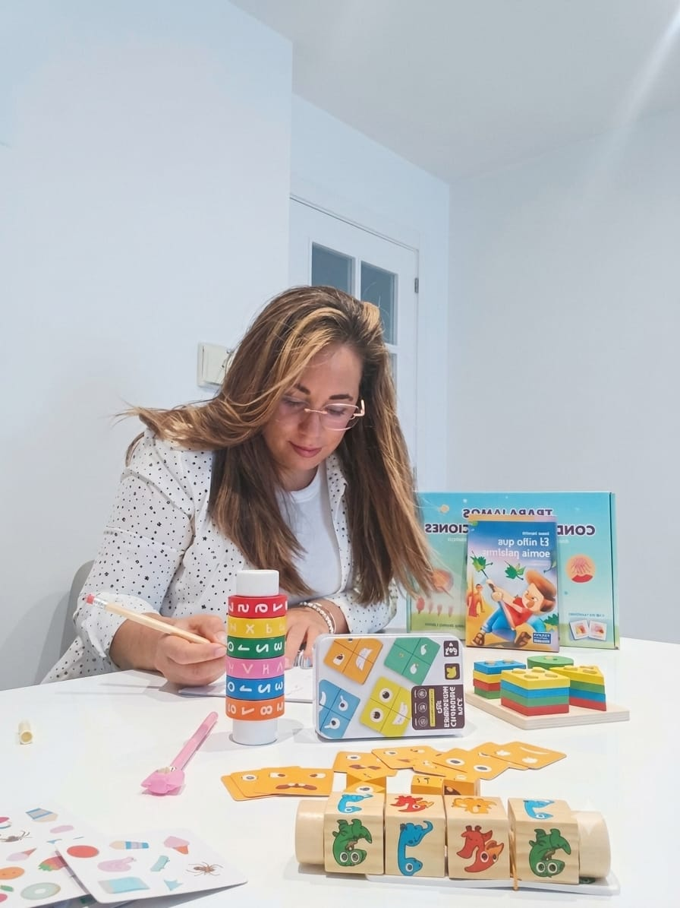

Sobre mí
Soy Isabel Monte, psicóloga especializada en infancia, adolescencia y dificultades del neurodesarrollo. Mi trabajo se centra en ayudar a niños, niñas y jóvenes a gestionar sus emociones, superar dificultades y crecer con confianza, acompañando también a sus familias en este proceso.
Trabajo con niños, niñas, adolescentes y sus familias en la evaluación e intervención de dificultades como el TDAH, los trastornos del espectro autista, los trastornos del aprendizaje, los problemas de conducta y otras dificultades emocionales.
Ofrezco terapia psicológica y psicoeducativa desde un enfoque cercano, respetuoso, basado en la evidencia y adaptado a cada etapa evolutiva y a las necesidades de cada persona. Creo un espacio seguro donde el menor pueda expresarse con libertad y donde padres y madres encuentren orientación y apoyo real.
Atiendo en consulta en Alhendín (Granada) y también ofrezco sesiones online para quienes lo prefieran o no puedan desplazarse.